Objectives
Install and configure a program we will use to create and edit web site - Eclipse. We will then use this tool to create a simple multi-page web site containing a small variety of text, images and links.
Setup
Instructions for working in Walton Building PC Labs:
If you are working on the workstations in the IT Building, locate the C: Drive in the Explorer. Navigate to C:\dev\eclipse\javascript folder. Run (double click on) the "Eclipse" application.
Proceed with the next step of the lab.
Instructions for working on your own laptop
Download and install the Eclipse IDE from
Select the version "Eclipse IDE for Java EE Developers". The primary prerequisite for installing Eclipse is that you have a recent Java installation on your workstation. To see if you have Java, and to install it if you do not, visit:
Installing Eclipse is usually just a matter of unarchiving the Eclipse download. This unarchiving tool here will generally be much faster than native windows archive support:
Once installed, navigate to and explore the new "eclipse" folder

You will notice the program "eclipse" in there - double click to launch it now. It should launch in about 30 second. At first you will see this splash screen:

And then it will eventually display this dialog box:

Before pressing "OK", read the suggested path carefully. This is the path where eclipse will create and manage any projects you create The suggested path may be ok for the moment - but ideally the best location is directly from your C: drive, perhaps in a subdirectory called 'modules' as shown, but this can be changed later.
When naming files/folders a useful practice is to keep with the following rules:
- always use lower case
- never use spaces. To break up a name, use hyphens (-) instead
- on windows, manage directories from the root of C:
Press OK. After a few seconds, Eclipse should launch looking like this:

If you close the welcome screen - then you should see the default project layout:
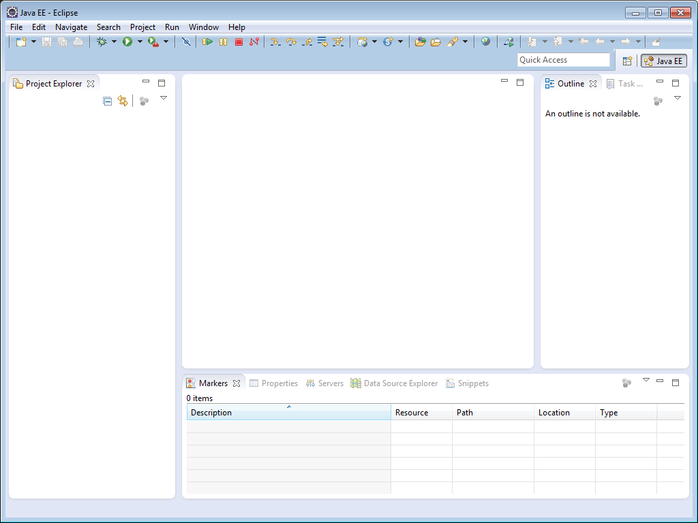
Congratulations - you have launched the Eclipse Web Development Environment.
First Project
In Eclipse, select File->New->Other. Navigate to Web, and select "Static Web Project":

Press "Next" and then give the project a name:
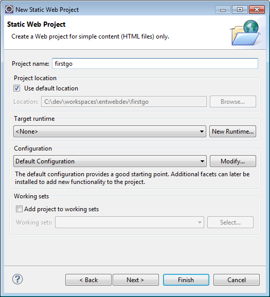
Press "Finish". You will be asked if the project should have a "web perspective":
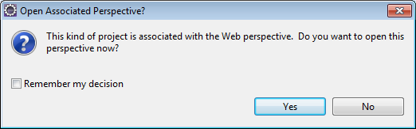
Select Yes and you should now have an empty project:
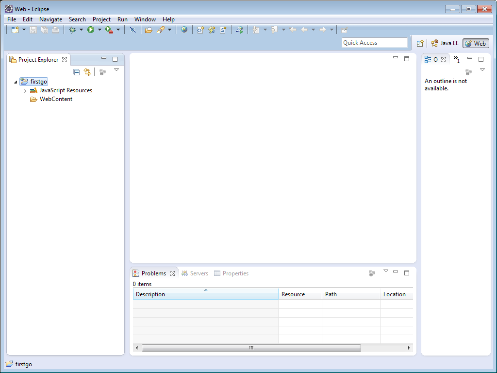
We will now create a new HTML file. Select "WebContent" and right click, select "New" and then "Html file" as shown.
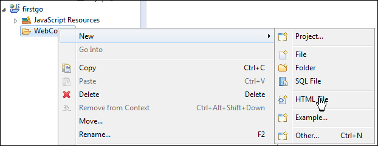
Give the file a name and press finish.
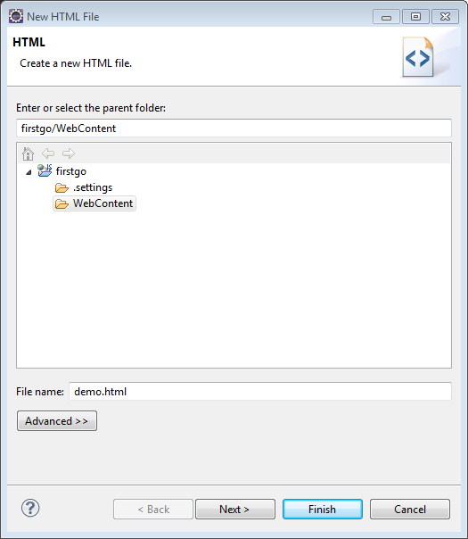
This will create a new html file:
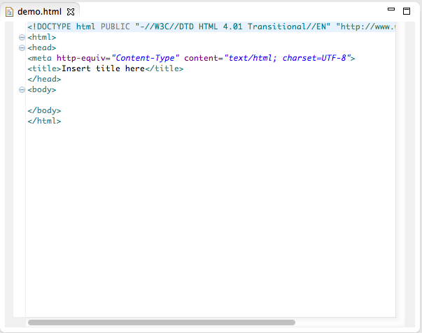
Correct the indentation in the generated code: - by which we mean for every element go in 2 spaces, and as every element concludes, go out 2 spaces.
Also, add some simple markup as a test:
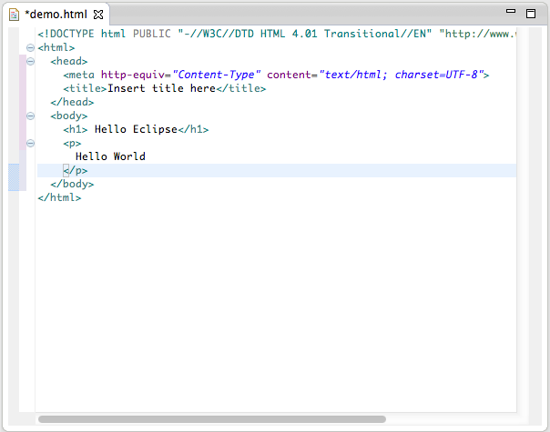
Note the * in front of the file name in the tab view. This indicates that the file has not been saved yet. Save the file (File->Save) and observe the * disappear.
Also observe the tree view on the right which is providing a structural view of the document tree, as you type it:
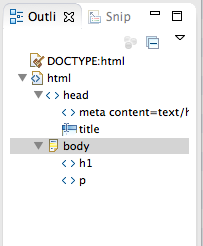
We will now attempt to view the file in a browser. We could locate the file on your disk, and open with a browser.However, Eclipse has a built in browser which can be more convenient. To trigger it, select the html file in the "Project Explorer" window ... Right click, select "Open with" and select "Web Browser"
We should now be viewing the same file in a browser, within Eclipse:
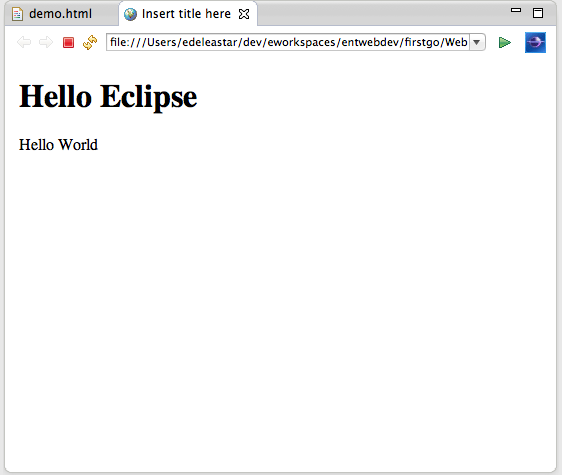
Project Files
It is worth becoming familiar with the location of the html file you have just generated. Depending on which drive you selected, run "Windows Explorer" (Programs->Accessories->Windows Explorer), navigate to that drive, and open the "workspace" folder.
You should see a folder for the project you just created, along with the html file itself:
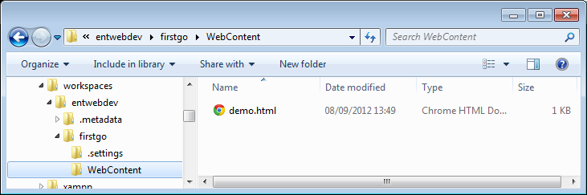
Lets do an experiment. Still using Windows Explorer, create a new folder called "images" in the "WebContent" folder.Now copy an image in here from somewhere else. You could use this image here:
(right click, and save the image).
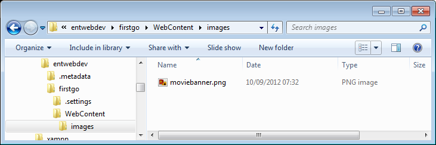
Now lets switch back to Eclipse looking in particular at the "Project Explorer" on the left:
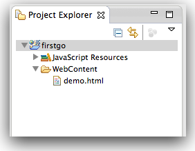
This is a view of the project however it does not seem to include the new images content we have just added in windows explorer. This is just because the change made has not percolated through to eclipse yet. To correct this, select the project and then select "File->refresh"
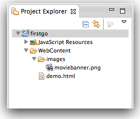
Eclipse should now have revealed your image content. Insert a link to this image somewhere in your html file:
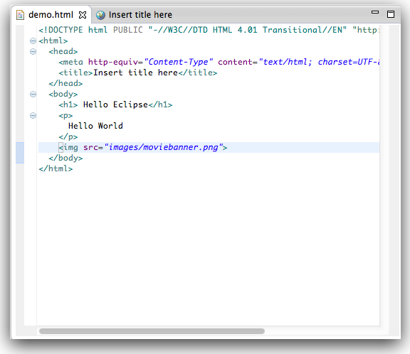
You might notice that eclipse may show you errors in the html if your html is incorrect. Save the changes, and switch tabs to the browser view. It will currently display the content without the image. However, if you press the "reload" button (two arrows along the top), then it should display the new version with the image:
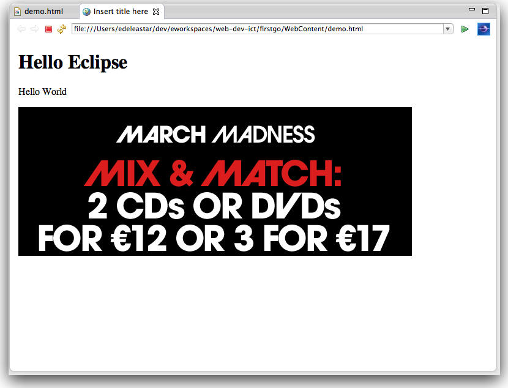
Lab01 Project
Create a new project called "lab01" using the same options as in the first step of this lab.
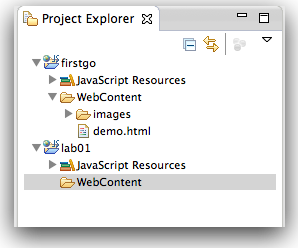
Notice that we now have two separate projects open. We will populate lab01 with some simple content to illustrate the basic html vocabulary we have been exploring. First, create come folders inside the lab01 project as shown - to be called "about", "catalogue" and "images":
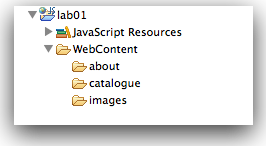
Here are four image files:
Save these files (right-click in browser and select 'save as') onto your local file system. Then, using explorer, drag and drop them into the 'images' folder. In the dialog Eclipse pops up select the default ('copy') as opposed to 'link'.
Here is some basic html content:
1: index.html
<html>
<head>
<title>My DVD Shop</title>
</head>
<body>
<h1>Welcome to the New and Improved DVD Shop</h1>
<img src="images/moviebanner.png">
<p>
We have the biggest selection of DVDs and Games in Ireland.
Check out our <a href="catalogue/newreleases.html">new releases</a>,
This week we recommend <em>the Crazies</em>.
</p>
<h2>Directions</h2>
<p>
You'll find us right in the center
of downtown Webville. If you need help finding
us, check out our
<a href="about/directions.html">detailed directions</a>.
Come join us
</p>
</body>
</html>
2: newreleases.html
<html>
<head>
<title> My DVD Shop: New Releases </title>
</head>
<body>
<h2>The Hobbit </h2>
<p>
<img src="../images/hobbit.jpg">
he first in a trilogy of films based on the enduring masterpiece The Hobbit by J.R.R. Tolkien,
The Hobbit: An Unexpected Journey follows title character Bilbo Baggins,
who along with the Wizard Gandalf and 13 Dwarves, led by Thorin Oakenshield is
swept into an epic quest to reclaim the lost Dwarf Kingdom of Erebor from the fearsome
Dragon Smaug.
</p>
<h2>Argo</h2>
<p>
<img src="../images/argo.jpg">
Based on real events, the dramatic thriller "Argo" chronicles the life-or-death covert operation
to rescue six Americans, which unfolded behind the scenes of the Iran hostage crisis,
focusing on the little-known role that the CIA and Hollywood played-information that was not
declassified until many years after the event.
</p>
<h2>Skyfall</h2>
<p>
<img src="../images/skyfall.jpg">
Bond's loyalty to M is tested as her past comes back to haunt her. As MI6 comes under attack,
007 must track down and destroy the threat, no matter how personal the cost.
</p>
<p>
<a href="../index.html">Back to the Shop</a>
</p>
</body>
</html>
3:directions.html
<html>
<head>
<title>My DVD Shop Directions</title>
</head>
<body>
<h1>Directions</h1>
<p>Take the 305 S exit to Webville go 0.4 mi</p>
<p>Continue on 305 go 12 mi</p>
<p>Turn right at Structure Ave N go 0.6 mi</p>
<p>Turn right and head toward Structure Ave N go 0.0 mi</p>
<p>Turn right at Structure Ave N go 0.7 mi</p>
<p>Continue on Structure Ave S go 0.2 mi</p>
<p>Turn right at SW Presentation Way go 0.0 mi</p>
<p>
<a href="../index.html">Back to the Shop</a>
</p>
</body>
</html>
Create new html files in your project using the above content, structured as shown here:
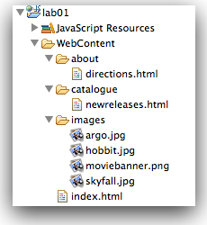
In eclipse, you should be able to browse to the simple web site:
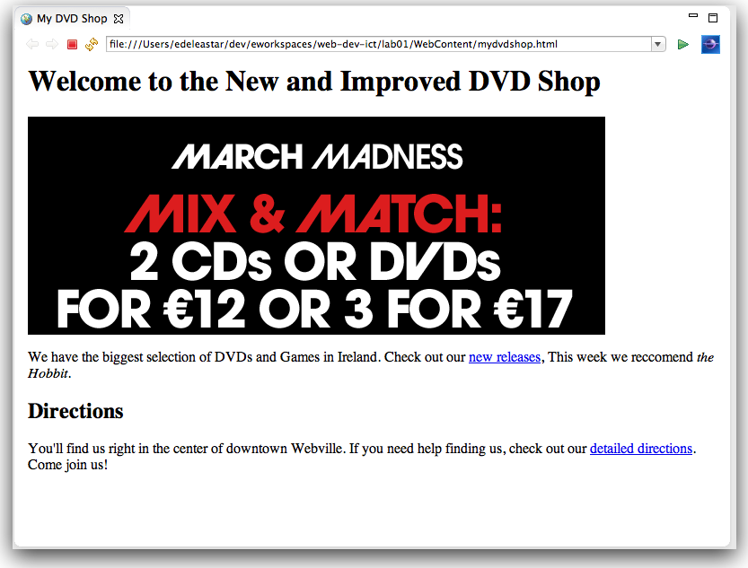
Verify that the links work as expected.
CSS
We will now introduce a stylesheet into our project. Stylesheets are usually maintained in separate files with the .css extension. Create one now in the lab01 project:

Call it 'style.css'. The workspace should look like this:
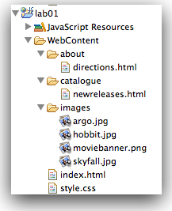
We bind this file into the project by 'linking' it to our home page. This must be incorporated into the \<head> element of each page. Currently index.html head section looks like this:
<head>
<title>My DVD Shop</title>
</head>
We can extend it with a new element to link to the stylesheet:
<head>
<title>My DVD Shop</title>
<link type="text/css" rel="stylesheet" href="style.css" media="screen" />
</head>
There is no visible effect on our page yet until we introduce a rule into the stylesheet.
Try this one:
p
{
color: maroon;
}
Staying in Eclipse, you should be able to reload the page in the internal browser, and observe the change in the colour of the text:
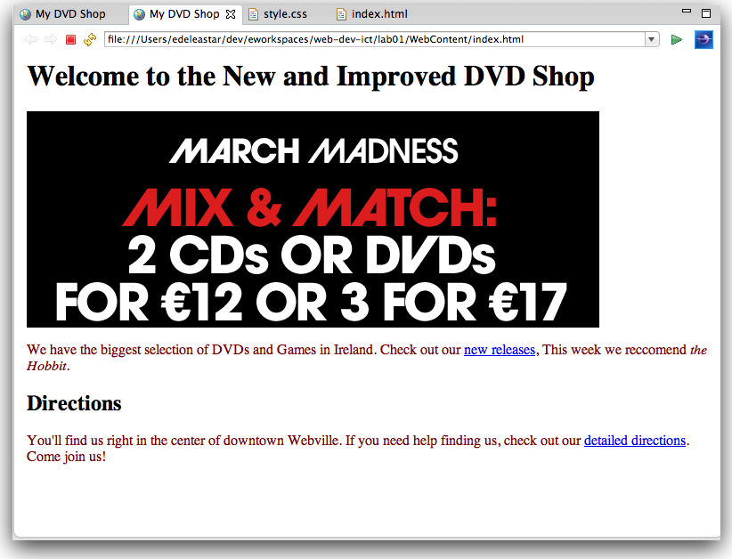
Experiment with the following rules, introducing them one at a time:
body
{
font-family:sans-serif;
}
h1, h2
{
color: gray
}
h1
{
border-bottom: 1px solid black;
}
Exercises
Solution So Far..
This is an archive (zip file) of a solution to the lab so far:
Even if you have completed the lab so far, see if you can find a way of bringing this project into your eclipse workspace. To do this you will need to do three things:
- Download the archive
- Unzip (expand) the archive
- Import the project (in the expanded archive) into eclipse. To do this in eclipse, try
File->Import->General->Existing Project Into Eclipse
More New Releases
Just to get used to the editor, create a few more entries in the 'newreleases.html', prerhaps you can locate content from some web source (including images). Try to identify and replicate the indentation styled of the existing content.
Lists
-
For a given entry, provide a list of actors in the movie.
-
In your first attempt list include the list of actors in a \<p> tag on separate lines.
-
Then try using the \<br> tag and observe the different.
-
Finally, experiment with this element here:
i.e.
<ul>and<ol>, coupled with<li>
Link the CSS file to all pages
Currently you may not have the CSS file 'linked' to all pages. i.e. only index.html is styled with the css rules you have defined. See if you can link the other pages now.
A new page
Incorporate a brand new page into the project. It can contain any content you think would be useful. Look at some online dvd / movie rental sites for idea.